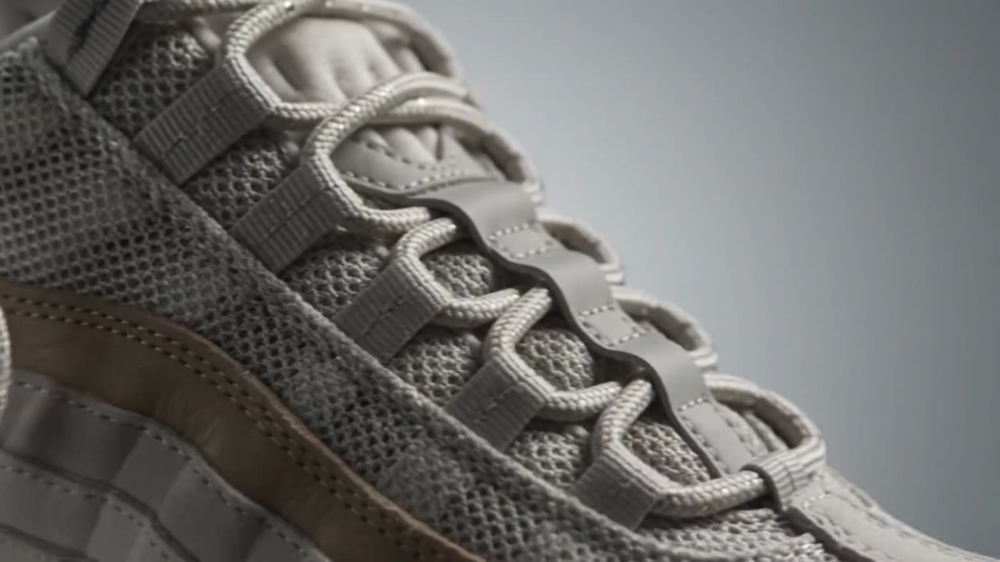
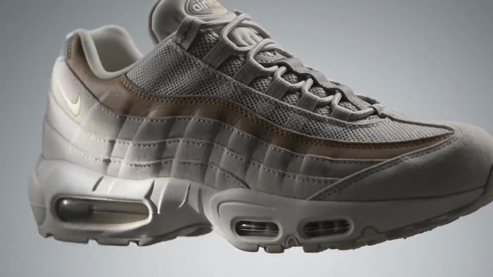
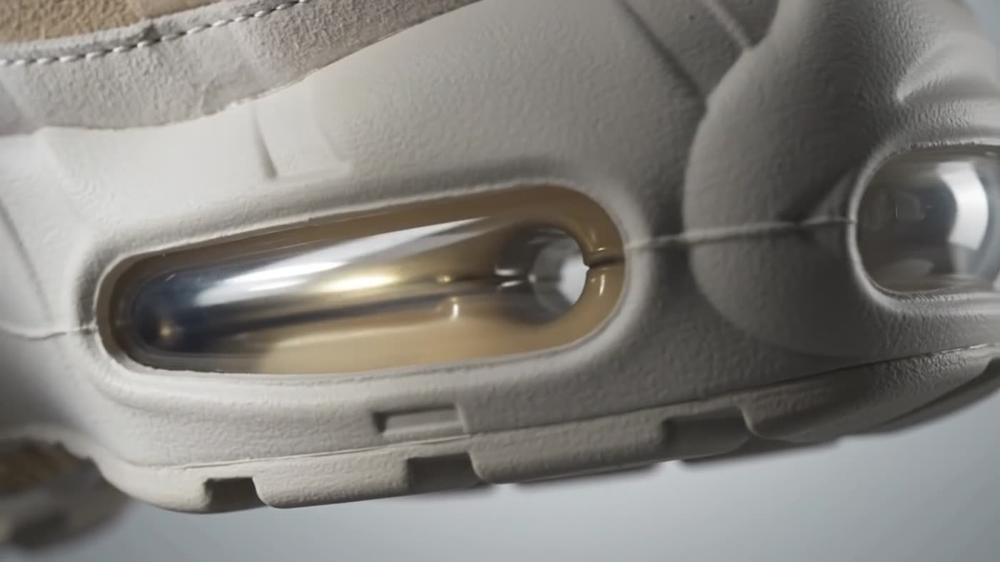
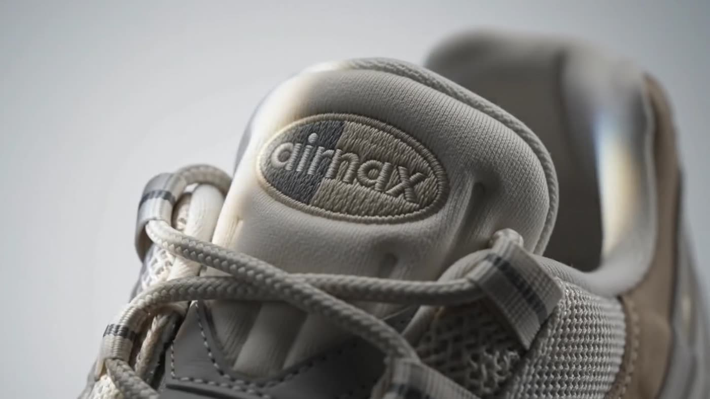

EST. 1995 · SERGIO LOZANO
AIR MAX 95
A STUDY IN HUMAN ANATOMY
He drew the spine, then the ribs,
then the skin — and shaped a shoe
around the body that wears it.
03 — DETAIL
Visible Air,
Visible Air,
underfoot & forward.
The first Nike to expose an Air unit in the forefoot. Pressurised gas, held in a window, carrying every step.
THE ANATOMY of Air
01 / ORIGIN
In 1995 Sergio Lozano looked away from the running track and into the body itself. The layered panels became ribs. The mesh, muscle fibre. The lace loops, the eyelets of a spine. Then he cut a window into the sole and let you see the air that carries you.
Sergio Lozano
Designer · Nike Air Max 95
1995
YEAR OF RELEASE

02 / ANATOMY
-
A1
Gradient Ribcage
Five stacked panels fade light to dark — built to hide the scuffs of the city and read as one continuous body.
-
A2
Muscle Fibre Mesh
An open nylon weave laid over the midfoot, breathing where the foot flexes hardest.
-
A3
Visible Forefoot Air
Pressurised Air, exposed for the first time under the toes. Cushioning you can look straight through.
-
A4
Eroded Waffle
A tread drawn from desert floor after rain — channels cut by water, translated into rubber.
Built from
five honest layers.


04 / AIR
Twenty-four
Twenty-four
pounds per
square inch.
Nitrogen held under tension in a urethane skin. It does not compress into nothing, and it does not come back tired.
1stVISIBLE FOREFOOT AIR
30YEARS IN ROTATION
∞RETURN OF ENERGY
The measure
of the thing.
- SILHOUETTE
- Air Max 95 — low, layered, anatomical
- DESIGNER
- Sergio Lozano, 1995
- UPPER
- Graded suede, nylon mesh, synthetic overlay
- CUSHIONING
- Visible Max Air — heel and forefoot
- MIDSOLE
- Polyurethane, sculpted spine profile
- OUTSOLE
- Waffle rubber, eroded channel tread
- FINISH
- Debossed tongue badge, 3M reflective accents
07 / RESERVE
SECURE your pair
A limited release. Enter your details to hold a size for forty-eight hours.